Event - PDC 2008
Event - PDC 2008
The Professional Developers Conference (PDC) is the definitive developer event focused on the technical strategy of the Microsoft developer platform. Attendees come from around the world to learn about the Microsoft developer platform directly from the people who make it happen.
The PDC is for developers, architects and technology leaders who are involved in making strategic technology decisions for their company or organization.
The New COM API for Accessibility and Automation in Windows 7 [2008/11/04]
The new COM API for UI Automation (UIA) is a significant advance over previous OS support for programmatic access to UI from native code. The Windows 7 UI Automation API also introduces new support…
Best practices for signing and verifying code on Windows 7 [2008/11/04]
This is a web exclusive session which was not delivered at PDC2008, but provides complimentary content aligned with PDC. How does Windows use code signatures to enhance security? How do I sign my…
Research in the 21st Century [2008/11/04]One of the defining characteristics of the human spirit is its ability to aspire to a greater tomorrow. Whether it be good health, sustainable resources, improved living standards, or better…
Day Two Keynote - Ray Ozzie, Steven Sinofsky, Scott Guthrie and David Treadwell [2008/11/04]Microsoft Executives Steven Sinofsky, Julie Larson Green, David Treadwell, Scott Guthrie and Takeshi Numoto provide insights to Windows 7, Office 14 for the Web, Web and Windows Development with…
Day Two Keynote - Chris Anderson and Don Box [2008/11/04]Chris Anderson and Don Box take the microphone over in Keynote 3 and explore Microsoft's latest technologies through the eyes of working developers.
Day One Keynote - Ray Ozzie, Amitabh Srivastava, Bob Muglia and David Thompson [2008/11/04]Microsoft Chief Software Architect Ray Ozzie introduces Windows Azure and Azure Services Platform during the PDC2008 opening keynote. Explore how Microsoft is transforming Microsoft's offerings across…
[OS43]
Panel: The Future of Unit Testing [2008/10/30]Unit testing means different things to different people. To Agile developers, it enables Test Driven Development. To researchers, it enables test generation from static and dynamic analysis. To…
Improving Code Quality with Code Analysis [2008/10/30]Learn how to catch critical bugs earlier in the development cycle by identifying issues such as buffer overruns and SQL injection attacks before they actually cause a security exploit. The Code…
Visual Studio Debugger Tips & Tricks [2008/10/30]The Visual Studio Debugger provides a slew of features that make the task of debugging both easier and more efficient. Learn about time-saving tips and tricks for all versions of the Visual Studio…
Research: Concurrency Analysis Platform and Tools for Finding Concurrency Bugs [2008/10/30]Learn about the Concurrency Analysis Platform (CAP) from Microsoft Research and how it enables various concurrency bug-finding tools. See a demo of CHESS, a tool built on CAP for finding and…
Panel: The Future of Programming Languages [2008/10/30]Learn about the future of programming from some of the leading programming languages experts in the world. Hear how programming will be affected by a number of fundamental changes that are occurring…
Project "Velocity": Under the Hood [2008/10/30]Learn about the architecture of Velocity, Microsoft's main memory distributed caching framework. Hear how Velocity was built to meet the performance, scale, latency, and availability requirements of…
The Concurrency and Coordination Runtime and Decentralized Software Services Toolkit [2008/10/30]Get an overview of Microsoft's CCR and DSS Toolkit 2008 and the technologies it contains for building loosely-coupled, highly concurrent, and distributed applications. Learn how the technologies are…
Natural Interop with Silverlight, Office, and Python in Microsoft Visual C# and Microsoft Visual… [2008/10/30]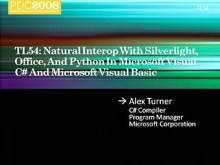Learn how the new C# and VB language features make interop with JScript, COM, and Python more natural. Dynamically control the HTML DOM within Silverlight, automate Word and Excel with less code, or…
Research: Contract Checking and Automated Test Generation with Pex [2008/10/30]In theory, Design by Contract and unit testing are excellent approaches to improve code quality. Learn how to use code contracts that express pre-conditions, post-conditions, and object invariants in…
Research: BAM, AjaxScope, and Doloto [2008/10/30]See Microsoft Research present new technologies for developing, debugging, and deploying web applications. Hear how BAM can turn a simple specification into a web-based cloud application with the…
Microsoft .NET Framework: Overview and Applications for Babies [2008/10/30]Join Scott Hanselman for this lots-of-code-minimal slides talk that walks through the sheer joy of building out a .NET Framework application with Visual Studio using many of the new advances in the…
Microsoft Visual Studio: Web Development Futures [2008/10/30]Get a first look at the next version of Visual Studio for web developers. See how the new deployment tools enable frictionless transfers of web projects from machine to machine. Learn about the new…
Microsoft Visual Studio Team System: A Lap Around VSTS 2010 [2008/10/30]In the spirit of an agile sprint, see how to use the next version of Visual Studio Team System to manage user stories and re-factor existing architecture. Learn how to diagnose real production…
Microsoft Visual C# IDE: Tips and Tricks [2008/10/30]Learn tips and tricks that will make C# code editing faster and more fun using Microsoft Visual Studio.
Dustin Campbell
Team Foundation Server 2010: Cool New Features [2008/10/30]Dive deep into the next version of Team Foundation Server (TFS), and learn how TFS has factored its learnings about usability, industrial scale, geographic distribution, manageability, and development…
Microsoft Visual Studio Team System Database Edition: Overview [2008/10/30]Visual Studio Team System (VSTS) Database Edition enables developers to apply agile practices to the database tier. VSTS takes "One Version of the Truth" for database objects and moves it…
IronRuby: The Right Language for the Right Job [2008/10/30]IronRuby is a new dynamically-typed language for Microsoft .NET that offers more runtime flexibility at the expense of compile-time verification. Find out why this is a good thing in the right…
Microsoft XNA Game Studio: An Overview [2008/10/30]Learn about XNA Game Studio and the XNA Framework and how they help to quickly and easily create games using Microsoft Visual C# that run on Windows, the Xbox 360, and Zune. Hear about the goals and…
Microsoft SQL Server 2008: Powering MSDN [2008/10/30]Hear how the MSDN team created the multi-terabyte system (over 12 million documents) that serves as the core of the web platform and provides integration of content from MSDN and TechNet into…
"Dublin" and .NET Services: Extending On-Premises Applications to the Cloud [2008/10/30]Would you like to extend your existing SharePoint and .NET applications both on-premises and to the cloud in a non-intrusive way? This session will show you real-world examples of how to harness .NET…
WCF: Zen of Performance and Scale [2008/10/30]Join us for an interactive lunch discussion about different kinds of performance and scale requirements that are a crucial part of any distributed systems development life cycle. Learn the principles…
Microsoft Visual Studio Team System: Leveraging Virtualization to Improve Code Quality with Team Lab [2008/10/30]Would you like to test fixes in a production-like environment before checking them in to source control? The Visual Studio Team System (code name "Rosario") release of Team Lab improves…
WCF: Developing RESTful Services [2008/10/30]Learn the latest features in Windows Communication Foundation (WCF)for building Web 2.0-style services that use URIs, HTTP GET, and other data formats beyond XML. See how these features can be applied…
Managed and Native Code Interoperability: Best Practices [2008/10/30]Learn when, where, and how to use the various managed to native interoperability technologies. See upcoming features and tools and how they make interoperability even easier.
Jesse Kaplan
Managed Extensibility Framework: Overview [2008/10/30]The Managed Extensibility Framework (MEF) is a new extensibility model in the .NET framework that provides a simple declarative model for application developers and extenders to build openly…
Microsoft Visual Studio: Customizing and Extending the Development Environment [2008/10/30]The next version of Visual Studio moves beyond add-ins and packages to unleash powerful new ways to customize and extend the environment. Learn about the Visual Studio extension model-built on a…
"Oslo": Building Textual DSLs [2008/10/30]The "Oslo" modeling language can define schemas and transformations over arbitrary text formats. This session shows you how to build your own Domain Specific Language using the…
Microsoft Sync Framework Advances [2008/10/30]This session shows you how the next version of the Microsoft Sync Framework makes it easier to synchronize distributed copies of data across desktops, devices, services, or anywhere else they may be…
Live Labs Web Sandbox: Securing Mash-ups, Site Extensibility, and Gadgets [2008/10/30]Aggregating third-party capabilities and services drives Web 2.0 innovation. Developers must make trade-offs in quality of service and security to achieve rich and personalized experiences. The…
"Oslo": Repository and Models [2008/10/30]"Oslo" is making news. We're taking silos of proprietary, platform, and application data and opening it up for sharing. What gets shared? Deployment configuration, web services definitions,…
"Oslo": The Language [2008/10/30]
The "Oslo" language, at the heart of the Oslo modeling platform, allows developers to quickly and efficiently express domain models that power declarative systems, such as Windows Workflow…
Parallel Programming for Managed Developers with the Next Version of Microsoft Visual Studio [2008/10/30]Come learn how the next version of Visual Studio and the Microsoft .NET Framework can help you write better performing and more scalable applications. We take a tour of new .NET APIs, including the…
Parallel Programming for C++ Developers in the Next Version of Microsoft Visual Studio [2008/10/30]Build more responsive C++ programs that take full advantage of multicore hardware. We demonstrate how the new Parallel Pattern Library (PPL) enables you to express parallelism in your code and…
Improving .NET Application Performance and Scalability [2008/10/30]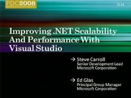Performance must be considered in each step of the development lifecycle. See how to integrate performance in design, development, testing, tuning, and production. Work with tools and technologies…
A Lap around "Oslo" [2008/10/30]Please Note: This session will be repeated on October 29th at 4:45PM. "Oslo" is the family of new technologies that enable data-driven development and execution of services and applications.…
Concurrency Runtime Deep Dive: How to Harvest Multicore Computing Resources [2008/10/30]Learn how the Concurrency Runtime provides an efficient and scalable infrastructure for multiple concurrent programming models by bringing together cooperative work scheduling and resource management…
WF 4.0: Extending with Custom Activities [2008/10/30]Windows Workflow Foundation (WF) 4.0 coordinates and manages individual units of work, encapsulated into activities. WF comes with a rich library of activities. Learn how to extend this library by…
Entity Framework Futures [2008/10/30]The next version of the Entity Framework adds scenarios in the areas of model driven development, domain driven development, simplicity, and integration. See a preview of production and prototype code…
Microsoft Visual Studio: Bringing out the Best in Multicore Systems [2008/10/30]
Learn how to prepare for the new challenges in developing and tuning concurrent applications. Hear about important steps in the creation of or conversion to parallel applications with demonstrations…
"Oslo": Customizing and Extending the Visual Design Experience [2008/10/30]"Oslo" provides visual tools for writing data-driven applications and services. Learn how to provide a great experience over domain-specific schemas, and explore the basic user model,…
WF 4.0: A First Look [2008/10/30]Programs coordinate work. The code for coordination and state management often obscures a program's purpose. Learn how programming with Windows Workflow Foundation (WF) 4.0 provides clarity of intent…
The Future of C# [2008/10/30]Please Note: This session will be repeated on October 29th at 3:00PM. In this talk Microsoft Technical fellow and C# Chief Architect Anders Hejlsberg outlines the future of C#. He describes the many…
Architecture without Big Design Up Front [2008/10/30]Microsoft Visual Studio Team System (VSTS), code-name "Rosario" Architecture Edition, introduces new UML designers, use cases, activity diagrams, sequence diagrams that can visualize…
Project "Velocity": A First Look [2008/10/30]It is predicted that all large applications will use a distributed data cache as the initial tier for all data access. This session presents an overview of "Velocity," Microsoft's…
Microsoft .NET Framework: Declarative Programming Using XAML [2008/10/30]If you're using Windows Presentation Foundation (WPF), Windows Communication Foundation (WCF), or Windows Workflow Foundation (WF), then XAML is your new best friend! Learn how an entire…
Coding4Fun: Windows Presentation Foundation Animation, YouTube, iTunes, Twitter, and Nintendo's… [2008/10/30]Spend time with Coding4Fun authors as they walk through some DIY Development projects: TwitterVote, Wiimote, InnerTube, and BabySmash. Brian PeekBrian is a Microsoft C# MVP who has been actively…
Microsoft Visual C++: 10 Is the New 6 [2008/10/30]Get more done. The next version of Visual C++ is all about improving developer productivity for large-scale applications. Learn about the IntelliSense and browsing experiences, changes to the…
Future Directions for Microsoft Visual Basic [2008/10/30]Hear language architect Paul Vick and specification lead Lucian Wischik discuss the future direction of the Visual Basic language. Learn about the new capabilities of the next version of the language,…
An Introduction to Microsoft F# [2008/10/30]Learn about Microsoft's new language, F#, a typed functional programming language for the Microsoft .NET Framework. F# combines functional programming with the runtime support, libraries, tools, and…
Deep Dive: Dynamic Languages in Microsoft .NET [2008/10/30]The CLR has great support for dynamic languages like IronPython. Learn how the new Dynamic Language Runtime (DLR) adds a shared dynamic type system, a standard hosting model, and support for…
Agile Development with Microsoft Visual Studio [2008/10/30]Visual Studio has built-in tool support for agile practices such as Scrum, XP, and others. The next version adds practices like test-driven development, continuous integration, and single product…
Offline-Enabled Data Services and Desktop Applications [2008/10/30]The ADO.NET Data Services Framework (a.k.a. Project "Astoria") introduced a way of creating and consuming flexible, data-centric REST services. By combining data services with the Microsoft…
Developing Applications Using Data Services [2008/10/30]In the near future, applications will be developed using a combination of custom application code and online building block services, including data-centric services. In this session we discuss…
WCF 4.0: Building WCF Services with WF in Microsoft .NET 4.0 [2008/10/30]
Eliminate the tradeoff between ease of service authoring and performant, scalable services. Hear about significant enhancements in Windows Communication Foundation (WCF) 4.0 and Windows Workflow…
Microsoft Visual Studio Team System Team Foundation Server: How We Use It at Microsoft [2008/10/30]Take a detailed look at the present and future of Team Foundation Server (TFS). With close to 14,000 users, 2,000 projects, 33 million files, and over 2 million work items, Microsoft runs one of the…
Microsoft Visual Studio Team System: Software Diagnostics and Quality for Services [2008/10/30]
In this session we present processes and tools from the upcoming Visual Studio Team System code name "Rosario" release and Microsoft Research and show how we deliver on quality, scalability,…
Under the Hood: Advances in the .NET Type System [2008/10/30]Enhancements to the type system in the next version of .NET Framework allow for loose type-coupling of components comprising your application. This talk is an in-depth examination of the changes in…
Office Business Applications: Enhanced Deployment [2008/10/30]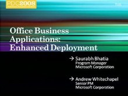This session explores how Microsoft Visual Studio 10 supports development for OBAs. We focus on the new enhancements to deployment and security, including ClickOnce multi-project and custom action…
Services Symposium: Cloud or No Cloud, the Laws of Physics Still Apply [2008/10/30]Bandwidth is not infinite and certainly not free, latency is bound by speed of light, and storage density is increasing. How will all this affect your architecture? In this final session, we discuss…
Services Symposium: Enterprise Grade Cloud Applications [2008/10/30]Today, hosted applications do not offer many of the features that large enterprises expect related to identity, management, and data. See detailed examples of "enterprise grade" hosted…
Services Symposium: Expanding Applications to the Cloud [2008/10/30]Take an enthusiastic--yet pragmatic--look at cloud opportunities. First, hear about a model for determining what should be pushed to the cloud and what should be kept in-house. Second, explore…
Parallel Symposium: Future of Parallel Computing [2008/10/30]Hear Intel describe its near-term support for Microsoft Visual Studio with Intel Parallel Studio. Learn about incubation technologies related to parallel computing, such as Intel Threading Building…
Parallel Symposium: Application Opportunities and Architectures [2008/10/30]Parallel Computing opens up potential for new categories of applications and user interaction. Hear Intel discuss its vision for Connected Visual Computing followed by Microsoft's guidance on how to…
Parallel Symposium: Addressing the Hard Problems with Concurrency [2008/10/30]Hear about the challenges of applying multi-core processors to general-purpose software and the key impacts this will have on developers and platforms. Learn about the hard problems that must be…
Hands On Analysis with Windows Performance Toolkit (General) [2008/10/30]This is a web exclusive session which was not delivered at PDC2008, but provides complimentary content aligned with PDC. This session will provide examples of case studies for several typical…
Developing compatible applications for Windows [2008/10/30]This is a web exclusive session which was not delivered at PDC2008, but provides complimentary content aligned with PDC. Learn the best practices on how to write compatible applications for the…
Driving for software quality through customer feedback [2008/10/30]This is a web exclusive session which was not delivered at PDC2008, but provides complimentary content aligned with PDC. Your customers are feeling pain, are you listening? This session will highlight…
Commerce Server "Mojave": Overview [2008/10/30]In this session you will get an in depth look into the new Commerce Server "Mojave" product release. Learn how you can use Commerce Server's next-generation e-commerce API to develop…
Framework Design Guidelines [2008/10/30]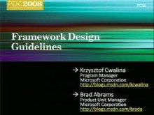Learn about guidelines that have helped the Microsoft .NET Framework grow into the most popular developer framework Microsoft has ever created. After ten years of use, we have an enormous amount of…
Windows Embedded "Quebec": Developing for Devices [2008/10/30]Do you need to understand how to extend your applications and services to embedded devices using Windows 7 technologies? See the new Windows Embedded roadmap and hear plans for our next-generation…
Oomph: A Microformat Toolkit [2008/10/30]Microformats are cool -- more than cool -- they're about enhancing the web, representing data using HTML. Targeted at web developers and designers, Oomph makes it easier to create, consume, and style…
Mono and .NET [2008/10/30]See how Mono, the open source implementation of the .NET Framework, offers a platform for developers to leverage .NET in new and unconventional scenarios. Explore many of these innovations: the C#…
Building High Performance JScript Applications [2008/10/30]
In this talk, we take a look at the various components that contribute to deliver a high performance Javascript application. We also look at the some of the script performance tools that we can…
Windows 7: Writing World-Ready Applications [2008/10/30]This session centers on globalization features for Windows 7, including sorting and string comparison, locale support, and coverage for new languages, with an eye to helping developers extend their…
Windows 7: Best Practices for Developing for Windows Standard User [2008/10/30]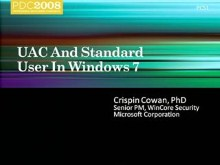The application development requirements in Windows 7 for UAC-compatibility are exactly the same as in Windows Vista: Vista-compatible applications will interact with UAC in Windows 7 without any…
Windows 7: Using Instrumentation and Diagnostics to Develop High Quality Software [2008/10/30]Learn how to enhance the quality and supportability of your software during developing and deployment using the Windows 7 instrumentation and troubleshooting platforms. This session will focus on key…
Microsoft .NET Framework: CLR Futures [2008/10/30]Learn about the new features in the next major version of the Common Language Runtime (CLR) from the people building it. Hear about support for in-process side-by-side CLR version support. Get a look…
Research: Designing the World Wide Telescope [2008/10/30]Hear from the architect of the World Wide Telescope discuss the challenges and opportunities in creating World Wide Telescope as a massively scalable software plus services application. Understand the…
Microsoft Expression Blend: Tips & Tricks [2008/10/30]See how Expression Blend can be used to design user interfaces for the desktop and the Web using both Windows Presentation Foundation and Microsoft Silverlight 2. Learn how to design consistently for…
WPF: Data-centric Applications Using the DataGrid and Ribbon Controls [2008/10/30]Business apps live on data. In this demo-focused talk, we'll show how we've made building data-centric business applications in WPF easier with the new DataGrid, Ribbon, and Calendar/DatePicker…
WPF Roadmap [2008/10/30]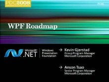See the future roadmap for Windows Presentation Foundation (WPF). Learn about improvements that are planned for graphics, data visualization, interop, performance, and "line of business"…
Windows 7: Programming Sync Providers That Work Great with Windows [2008/10/30]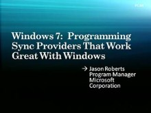Learn how you can enable your application to synchronize with other applications that use the Microsoft Sync Framework. This session covers how to implement sync for contacts and other PIM data, how…
Deep Dive: What's New with user32 and comctl32 in Win32 [2008/10/30]Hear about the lowest level user interface components (user32, comctl32) that appear in almost every Windows application. Learn about "recent" changes and enhancements in these subsystems,…
Windows 7: Deploying Your Application with Windows Installer (MSI) and ClickOnce [2008/10/30]If you are a developer involved in the creation of application deployment packages using Windows Installer (MSI) or ClickOnce, this session is for you. Learn how you can take advantage of new features…
ASP.NET: Cache Extensibility [2008/10/30]Learn how the next version of ASP.NET extends caching with an API that enables developers to plug-in custom cache implementations.
Stefan Schackow
Stefan works as a program manager on the…
SQL Server Compact: Embedding in Desktop and Device Applications [2008/10/30]Learn how SQL Server Compact can be used to create data files for your applications, run applications directly from DVD, capture user activity, and sync "back home." Learn the different…
Inside the Olympics: An Architecture and Development Review [2008/10/30]Hear about the end-to-end architecture that was developed for the 2008 Olympic Games online video broadcast experience. Learn about the capture/encoding process from Beijing, back haul to USA,…
Silverlight Controls Roadmap [2008/10/30]Come learn about the new Silverlight Controls that are being launched here at PDC and the plans for more great controls in the future. This talk takes you through the paces of the new controls and…
Open XML Format SDK: Developing Open XML Solutions [2008/10/30]The Open XML Format is an ISO/IEC 29500 standard and is the default file format for Microsoft Office Word 2007, Microsoft Office Excel 2007, and Microsoft Office PowerPoint 2007. The next version of…
Microsoft Visual Studio: Easing ASP.NET Web Deployment [2008/10/30]Learn how to use the web.config transformation engine to transform a developer web.config file to production. See how to create specific transformations for testing, staging, and production. Hear how…
ASP.NET and JQuery [2008/10/30]JQuery is an open source JavaScript library that has a passionate following among Ajax developers. Microsoft is integrating the open source JQuery library into both the ASP.NET Web Forms and ASP.NET…
ASP.NET AJAX Futures [2008/10/30]Explore the new ASP.NET AJAX client template and data binding framework, including declarative UI, controls, data binding in the browser, and integration with Data Services and server…
ASP.NET Dynamic Data [2008/10/30]The next version of ASP.NET MVC contains a new scaffolding feature based on Dynamic Data that provides a rich framework for creating data driven web sites. Learn how to quickly build a Dynamic Data…
Microsoft Silverlight 2: Control Model [2008/10/30]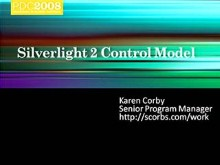Learn about the different types of controls in Silverlight, the differences between UserControls and custom controls, and how to customize their appearance through styling and skinning. Also learn how…
Microsoft Silverlight, WPF and the Microsoft .NET Framework: Sharing Skills and Code [2008/10/30]Come get an in-depth understanding of the compatibility between Windows Presentation Foundation (WPF) and Silverlight. Learn the relationship between WPF and Silverlight's various subsystems…
Microsoft Visual Studio: Building Applications with MFC [2008/10/30]The next release of MFC will provide encapsulations around a number of new Windows platform features. With this functionality you can easily build applications that integrate into features such as…
Windows 7: The Sensor and Location Platform: Building Context-Aware Applications [2008/10/30]Windows 7 introduces a platform for using sensor devices, such as light sensors or GPS sensors, to create environmental or location awareness in programs. In this session, you will learn how to use…
Windows 7: Integrate with the Windows 7 Desktop [2008/10/30]This session dives into new APIs that enable integration with the latest Windows desktop features. Learn about new extensibility methods to surface your application's key tasks. Discover how…
Windows 7: Welcome to the Windows 7 Desktop [2008/10/30]The Windows desktop is evolving--is your application ready to evolve also? This session sets the stage for exciting enhancements to the taskbar, Start Menu, and other desktop elements.
Chaitanya…
Windows 7: Design Principles for Windows 7 [2008/10/30]Together, we can increase customer enthusiasm, satisfaction and loyalty by designing user experiences that are both desirable and harmonious. In this session we introduce the Windows User Experience…
ASP.NET MVC: A New Framework for Building Web Applications [2008/10/30]Learn how the new ASP.NET MVC framework differs from the current ASP.NET Web Forms framework. Learn to take advantage of ASP.NET MVC to build loosely coupled, highly testable, agile applications. See…
ASP.NET 4.0 Roadmap [2008/10/30]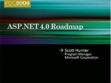Take a walk through the 4.0 landscape from ASP.NET and learn how you can get involved in shaping ASP.NET future. This talk focuses on the next release of ASP.NET including web forms and MVC. Do you…
Windows 7: Introducing Direct2D and DirectWrite [2008/10/30]Direct2D and DirectWrite are latest additions to the DirectX family of APIs. Learn how you can enhance your application experience with resolution independent, high-performance vector graphics using…
Developing for Microsoft Surface [2008/10/30]This session introduces the newly available Microsoft Surface SDK. Hear about the unique attributes of Microsoft Surface computing, dive into vision-based object recognition and core controls like…
Windows 7: Empower users to find, visualize and organize their data with Libraries and the Explorer [2008/10/30]Learn how you can enable a familiar experience for users and light up your application by using the Windows Search API and Library API and File Dialog. Also learn how you can integrate your web…
Windows 7: Benefiting from Documents and Printing Convergence [2008/10/30]Discover how updating your printing infrastructure to XPS allows your application to seamlessly bridge across both electronic and physical paper and benefit from new document workflow and…
Windows 7 Scenic Ribbon: The next generation user experience for presenting commands in Win32… [2008/10/30]Windows 7 includes a new user interface platform component that enables existing and new Windows application to take advantage of the next generation commanding experience ("Ribbon"). In…
Windows 7: Building Great Audio Communications Applications [2008/10/30]Using the PC as a phone is central to the future of communications, and this session will provide you with the essentials to build the end to end experience. Windows 7 provides APIs for integrating…
Deep Dive: The New Rendering Engine in Microsoft Internet Explorer 8 [2008/10/30]Users will be able to browse the web with brand new, standards compliant rendering engine in Internet Explorer 8, while continuing to support existing web content. We take a deep dive look into how…
Microsoft Silverlight Futures: Building Business Focused Applications [2008/10/30]What if you could develop your solutions with the ease pioneered by Microsoft Office Access, deploy them like an Internet application, and take advantage of the power of Microsoft .NET? Learn about an…
Microsoft Silverlight 2 for Mobile: Developing for Mobile Devices [2008/10/30]Wouldn't it be super cool if the Silverlight apps you build for the desktop can now run on Millions of Mobile Devices ? If you have been building Silverlight applications and are wondering how to…
WPF: Extensible BitmapEffects, Pixel Shaders, and WPF Graphics Futures [2008/10/30]Come learn how new Windows Presentation Foundation (WPF) graphics enhancements in the Microsoft .NET Framework 3.5 SP1 can be seamlessly integrated with existing WPF features. Take advantage of…
Deep Dive: Building an Optimized, Graphics-Intensive Application in Microsoft Silverlight [2008/10/30]In this deep dive session we pull the covers off of the layout, rendering, and media pipelines to discuss how things work and how to optimize your application. This session covers how to set goals…
Windows 7: Unlocking the GPU with Direct3D [2008/10/30]Learn how to use the latest version of Direct3D to unlock the rendering and computing power of the GPU and to target the wide variety of hardware used by your customers. Learn techniques for…
Windows 7: Writing Your Application to Shine on Modern Graphics Hardware [2008/10/30]This session centers on the new enhancements to DirectX that enable Win32 applications harness the latest innovations in modern graphics hardware. Learn how to use the Windows 7 graphics…
Windows 7: Developing Multi-touch Applications [2008/10/30]In Windows 7, innovative touch and gesture support will enable more direct and natural interaction in your applications. This session highlights the new multi-touch gesture APIs and explains how you…
Windows 7: Extending Battery Life with Energy Efficient Applications [2008/10/30]A single application can accidentally halve battery life for the average laptop. This session demonstrates best practices for designing energy efficient applications and shows utilities for diagnosing…
Windows 7: Web Services in Native Code [2008/10/30]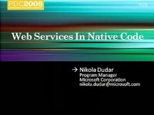Windows 7 introduces a new networking API with support for building SOAP based web services in native code. This session discusses the programming model, interoperability aspects with other…
Windows 7: Designing Efficient Background Processes [2008/10/30]Inefficient background activity has a dramatic impact on system performance, power consumption, responsiveness, and memory footprint. This session demonstrates best practices for background process…
Microsoft Application Virtualization 4.5 [2008/10/30]Microsoft Application Virtualization (App-V), formerly known as Microsoft Softgrid Application Virtualization, allows companies to create and customize "virtual packages" of desktop…
Showcase: How HP Built their Magcloud Service on Windows Azure [2008/10/30]Hear from an online magazine publishing service that was prototyped on Microsoft cloud services. Learn from the development team about what they built, why they built it, and what they learned about…
Datacenters and Resilient Services [2008/10/30]Microsoft Global Foundation Services (GFS) continues to learn by running online services while also building the next generation of services that are both resilient and cost effective. A key factor in…
Showcase: Windows Azure Enables /Nsoftware and Full Armor [2008/10/30]
Learn how early adopter customers built their services on the Microsoft cloud platform. Hear details about the experience related to design and development of their services, and why they chose to…
Showcase: Windows Azure Enables Live Meeting [2008/10/30]The next generation conferencing team discusses why the cloud computing platform was selected for a next-generation, high-scale conferencing service that requires high performance and reliability and…
PowerShell: Creating Manageable Web Services [2008/10/30]Learn how to create management web services using Windows PowerShell. Topics include: how to script against of a large set of machines, how to manage raw HW devices using WS-MAN and Web Services, how…
Windows 7: Optimizing Applications for Remote File Services over the WAN [2008/10/30]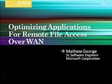Windows 7 introduces many improvements designed to improve the file access experience for mobile users and users in branch offices. In this session, we introduce fundamental changes to the…
Extending Terminal Services and Hyper-V VDI in Windows 7 [2008/10/30]Come learn about advanced topics in the Windows Graphics remoting architecture (RDP 7).This talk introduces new Windows 7 remoting features, discusses how they are going to be leveraged in Microsoft's…
Windows 7 Presentation Virtualization: Graphics Remoting ( RDP) Today and Tomorrow [2008/10/30]Staying productive when you're mobile is getting easier, thanks to RDP 7 Graphics remoting technology.
Nadim Abdo
Gaurav Daga
Under the Hood: Inside the Windows Azure Hosting Environment [2008/10/30]Learn about the internal service management system and virtualization technologies responsible for monitoring, configuring, and lifecycle management of the cloud computing environment. Hear about the…
Windows Azure: Programming in the Cloud [2008/10/30]This session presents a detailed look at how services are programmed in the cloud, including the differences between the cloud hosting stack and a typical IIS7/ASP.NET hosting stack.
Daniel…
A Lap Around Windows Azure [2008/10/30]Hear about key problems that cloud computing is solving and how these services fit into the Microsoft cloud computing initiatives. Learn about the pillars of the platform, its service lifecycle, and…
Web Application Packaging and Deployment [2008/10/30]In this session, you will learn how to use powerful new UI and command line tools for Web application packaging and deployment, and you'll dive under the hood of Visual Studio 10 to see how it will…
IIS 7.0 and Beyond: The Microsoft Web Platform Roadmap [2008/10/30]The Web doesn't sit still and neither do you. One of the key features of IIS 7.0 is the ability to extend and customize almost any aspect of the Web server through .NET APIs, and the IIS team is…
How to Develop Supercomputer Applications [2008/10/30]Learn about both traditional and new High Performance Computing (HPC) programming models enabled via Windows HPC Server 2008. Discover how the Microsoft Message Passing Interface (MPI) enables…
Exposing Connected Home Services to the Internet via Windows Home Server [2008/10/30]Learn how to leverage the Remote Access platform in Windows Home Server to expose on-premises services running in the connected home to the Internet. See how to expose a home automation service…
Developing Connected Home Applications and Services for Windows Home Server [2008/10/30]Learn how to build applications and services deployed on Windows Home Server that power PCs and devices throughout a connected home. See an example home automation and energy management service, and…
Developing Solutions for Windows Server 2008 Hyper-V Using WMI [2008/10/30]Hyper-V provides new capabilities through its WMI APIs. Learn how to apply these APIs while creating your own solutions.
Nihar Shah
My name is Nihar Shah, and I work on the Hyper-V team at…
Enabling Test Automation Using Windows Server 2008 Hyper-V [2008/10/30]With Hyper-V, you can decrease your software test cycles, improve your test coverage, and provide testers and developers a safe, scalable test bed for applications. In this session we introduce the…
Windows Azure: Modeling Data for Efficient Access at Scale [2008/10/30]Learn how to use the highly scalable, available and durable table storage service. This session presents a deep dive with demos into the programming APIs and data models for structured…
Windows Azure: Essential Cloud Storage Services [2008/10/30]Modern services need available, scalable and durable data in many forms, including both structured and unstructured data. This session presents blob, table and queue storage services and the APIs for…
Windows Azure: Architecting & Managing Cloud Services [2008/10/30]From design to deployment, building a scalable, highly available service is different from building other kinds of applications. This session discusses the impact that designing for the cloud has on…
Windows Azure: Cloud Service Development Best Practices [2008/10/30]This session goes beyond the "Hello World" development experience, giving best practices across common tasks for serious service developers. These tasks include logging, debugging,…
Developing and Deploying Your First Windows Azure Service [2008/10/30]In this session we take a tour of the capabilities of the Microsoft cloud platform by building and running a simple service using the platform SDK. The sample service highlights some of the features…
Behind the Scenes: How We Built a Multi-Enterprise Supply Chain Application [2008/10/30]Learn how we built a multi-enterprise supply chain application using the cloud services platform. Today, most organizations are deeply interconnected, and business applications span multiple…
Case Study: Bridging On-Premises with the Cloud [2008/10/30]Learn how CRM has designed and architected a single code-base to target a cloud-based and on-premises offering. The architect of Microsoft Dynamics CRM will describe how they look at using cloud…
Microsoft Dynamics AX: Building Business Process into Your Application [2008/10/30]Do you want to understand how to model and orchestrate business process in your application? Learn how Microsoft Dynamics AX is using .NET 4.0, specifically focusing on illustrating how to use Windows…
Showcase: Industry Leaders Moving to the Cloud [2008/10/30]Senior architects from Accenture, Epicor and Infosys, who have been using Microsoft's cloud platform for the last while, walk through the applications they've built on the platform, the architectures…
.NET Services: Access Control In Microsoft .NET Services [2008/10/30]Learn how to manage access control to the ServiceBus, Workflow, and Data Services via the Access Control Service. This session illustrates the access control capabilities of these services, and…
Designing Your Application to Scale [2008/10/30]Learn the concepts, benefits and challenges of scale-out application design. Partitioning your app, your data, introducing the concept of roles and dealing with inconsistent state across the system…
SharePoint Online: Extending Your Service [2008/10/30]Learn how to access and manipulate SharePoint files and data remotely with Web Services, customize your design and layout, and create workflows using Office SharePoint Designer 2007. See these…
SQL Services: Tips and Tricks for High-Throughput Data-Driven Applications [2008/10/30]Learn how to use the Authority-Container-Entity (ACE) concepts to build large scale, high-throughput applications using SQL Services and other cloud-based services.
David Robinson
David Robinson…
Microsoft Advertising Platform: A Day in the Life of a Click [2008/10/30]Clicks are the single cell organism of the digital advertising world. See how a click moves through the advertising ecosystem covering all the basic components, including delivery engines, billing…
Microsoft Advertising Platform: A Lap Around [2008/10/30]Hear a review of the core components of the Microsoft Advertising Platform, how the core components fit together, and our roadmap. Get the information you need to decide whether to use the platform…
SharePoint 2007: Advanced Asynchronous Workflow Messaging [2008/10/30]Learn how to build an employee on-boarding application that depends on a server located inside another company. We show how to use Microsoft Visual Studio to build the document workflow and have it…
Exchange Web Services Managed API: Unified Communications Development for Exchange [2008/10/30]The new Exchange Web Services Managed API provides managed code access to Exchange, whether running on premises or in the cloud. Learn how this new Microsoft .NET API provides full access to Microsoft…
Office Communications Server 2007 R2: Enabling Unified Communications [2008/10/30]Learn how UCMA 2.0 and Unified Communication Workflow Activities provide a powerful communications arsenal to build Presence, IM, and voice-enabled services that can be leveraged from any…
Identity: Windows CardSpace "Geneva" Under the Hood [2008/10/30]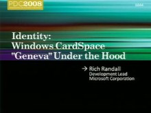Windows CardSpace provides a consistent, hardened sign-in experience that uses standard protocols and works with both thin and smart client applications. Learn about the features and architecture of…
Identity: "Geneva" Deep Dive [2008/10/30]Examine the architecture of the "Geneva" next generation identity server and framework and how it can be customized and extended for advanced security scenarios. At the center of the…
Identity: "Geneva" Server and Framework Overview [2008/10/30]See how to use "Geneva" and the claims-based identity model to enable single sign-on, strong authentication, federation, and the ability to flow user authentication between applications.…
Live Services: What I Learned Building My First Mesh Application [2008/10/30]What's it like building an application that uses feeds and synchronization? The Live Services resource and synchronization model offers a lot of flexibility to developers and a different approach to…
Sync Framework: Enterprise Data in the Cloud and on Devices [2008/10/30]See how synchronization plays a pivotal role in transitioning to a managed cloud environment by creating a central hub of information in the cloud. Using synchronization, organizations can enable more…
.NET Services: Logging, Diagnosing, and Troubleshooting Applications Running Live in the Cloud [2008/10/30]Learn the real world ways of tracking down and fixing problems on services and systems running live in the cloud. These black belt techniques and application patterns are used to simplify the…
Developing with Microsoft .NET and ASP.NET for Server Core [2008/10/30]In the next release of Windows Server, the Server Core installation option will support a subset of .NET and ASP.NET allowing your managed applications and web servers to take advantage of the reduced…
.NET Services: Connectivity, Messaging, Events, and Discovery with the Service Bus [2008/10/30]Learn how to use the service bus in the Microsoft .NET Services to address difficult connectivity, security, and discoverability issues.
Clemens Vasters
Clemens Vasters works as a Program…
Live Services: Programming Live Services Using Non-Microsoft Technologies [2008/10/30]Live Services building blocks expose a platform-independent, language neutral, protocol-based programming model. The framework is designed from the get-go to not be bound to any platform-specific…
Developing Applications for More Than 64 Logical Processors in Windows Server 2008 R2 [2008/10/30]Windows 7 will support more than 64 logical processors with improved kernel scheduler mechanisms that enable efficient scaling. Learn how to use new system software affinity APIs to aid application…
SQL Server 2008: Developing Secure Applications [2008/10/30]Learn what application developers and DBAs should consider to help secure data. Topics discussed include authentication, authorization, execution contexts, and encryption with focus given to the new…
FAST: Building Search-Driven Portals with Microsoft Office SharePoint Server 2007 and Microsoft… [2008/10/30]The combination of FAST ESP and Microsoft Office SharePoint Server (MOSS) 2007 allows for the development of powerful search-driven portals. Learn about the architecture and functionality of FAST ESP,…
Live Services: The Future of the Device Mesh [2008/10/30]Live Mesh Services provide the infrastructure for devices to share and listen: communicating status, accepting remote management, and synchronizing and sharing files and applications. See how the…
Live Services: Notifications, Awareness, and Communications [2008/10/30]Learn how the new Live Framework allows applications to pass, persist, and surface data across devices, users and applications. Hear how to leverage peer-to-peer, relay, subscriptions, notifications,…
Dynamics Online: Building Business Applications with Commerce and Payment APIs [2008/10/30]Learn how to use the Dynamics Online Commerce and Payment API to extend business processes from Enterprise Resource Planning (ERP) systems to the cloud. This session will show three key scenarios:…
Live Services: FeedSync and Mesh Synchronization Services [2008/10/30]Learn about FeedSync and how Live Mesh uses it to synchronize data across devices and to the cloud. Understand how to use FeedSync and the new Live Framework to integrate your existing web and client…
Microsoft Dynamics CRM: Building Line-of-Business Applications [2008/10/30]Learn how the next version of the Microsoft Dynamics CRM data model can be manipulated through meta data. See how to add custom business logic, including plug-ins and custom messages for Microsoft…
Live Services: Building Mesh-Enabled Web Applications Using the Live Framework [2008/10/30]Come learn how to extend your existing web applications and get them to live and breathe within Live Mesh. Mesh-enabled web applications can be accessed from anywhere through a web browser as well as…
Identity: Connecting Active Directory to Microsoft Services [2008/10/30]Learn how to augment your existing IT infrastructure with Microsoft Services. Manage and secure end-user access to cloud services using your existing investment in Active Directory. Enable end users…
.NET Services: Access Control Service Drilldown [2008/10/30]This session shows how to use the access control service in your application. Learn how to secure your application or service using the Access Control service's APIs. We'll then drill into the…
.NET Services: Orchestrating Services and Business Processes Using Cloud-Based Workflow [2008/10/30]See how simple it is to use cloud-based workflow services to run business processes in the cloud as well as perform orchestration across on-premises and cloud services while running workflows in an…
SQL Server 2008: Business Intelligence and Data Visualization [2008/10/30]Learn how to create an entity data model and bind it to data visualization and ReportViewer controls. Dive into new Reporting Services features like: Tablix, new Data Visualization controls, and the…
SQL Server 2008: New and Future T-SQL Programmability [2008/10/30]This session covers new 2008 T-SQL programmability features and enhancements for SQL data types, SQL language, T-SQL procedure programming, CLR integration, T-SQL dependency management, globalization,…
SQL Server 2008: Deep Dive into Spatial Data [2008/10/30]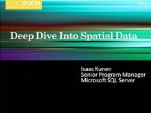Look at some interesting and unexpected aspects of spatial data, where intuitive expectations collide with the hard realities of geometry and computation. Explore problems such as the ambiguity in…
A Lap around SQL Services [2008/10/30]SQL Services is a set of hosted database services that supports high-scale distributed applications using SOAP and REST interfaces. Learn how to model data for high availability and scale, and see how…
Identity: Live Identity Services Drilldown [2008/10/30]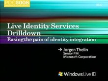Live Identity Services enables developers on any platform to choose the identity integration model that best enables their scenarios, including: web or client authentication, delegated authentication,…
Live Services: Making your Application More Social [2008/10/30]What can you do to increase your web application's impact? Add a social element! There are hundreds of millions of people who use Windows Live services every month that you can access via the Live…
Live Services: Live Framework Programming Model Architecture and Insights [2008/10/30]Hear about the inner-workings of the new Live Services developer stack-the Live Framework. See the engine that makes it all work, and cover advanced topics such as hybrid client/cloud scripting,…
"Dublin": Hosting and Managing Workflows and Services in Windows Application Server [2008/10/30]Hear about extensions being made to Windows Server to provide a feature-rich middle-tier execution and deployment environment for Windows Workflow Foundation (WF) and Windows Communication Foundation…
SQL Server 2008: Beyond Relational [2008/10/30]
In scenarios like product catalogs, property management, and digital asset management, information is often sparse and semi-structured. Learn how the new technologies in Microsoft SQL Server 2008…
SQL Server: Database to Data Platform - Road from Server to Devices to the Cloud [2008/10/30]Cloud-based data services will change the way you develop and deploy applications, and SQL Server technologies are evolving to help you build data-driven solutions that span devices, desktops,…
SQL Services: Futures [2008/10/30]Learn about new capabilities in upcoming versions of SQL Services. See demonstrations of services like advanced query processing, sync services, and reporting services running in the cloud. Also learn…
SharePoint 2007: Creating SharePoint Applications with Visual Studio 2008 [2008/10/30]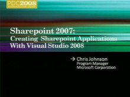Learn how to use Microsoft Silverlight and SharePoint together. See us build a SharePoint application using the Visual Studio 2008 extensions for SharePoint.
Chris Johnson
Chris is a Program…
.NET Services: Messaging Services - Protocols, Protection, and How We Scale [2008/10/30]Look under the hood of the Microsoft .NET Services service bus, the protocols we use, and how to use the services from non-Microsoft platforms and languages. Learn which part of the messages and…
Live Services: Deep Dive on Microsoft Virtual Earth [2008/10/30]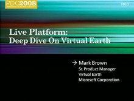Learn about the next major release of Virtual Earth. See the improvements to our parsing and geo-coding engines, clustering, localization, and routing. Hear how the new Virtual Earth Web Services…
Microsoft Office Communications Server and Exchange: Platform Futures [2008/10/30]Learn how applications and services can add presence, IM, VOIP, and Video using the Unified Communications Platform. Also, see the roadmap for the future of Microsoft Unified Communications (UC)…
Microsoft Dynamics CRM: The Appealing Business Application [2008/10/30]Have you ever built a business application that people actually enjoy using? Learn how you can build appealing business applications using the Microsoft Dynamics CRM product and its application…
SQL Server 2008: Developing Large Scale Web Applications and Services [2008/10/30]As a developer of mission critical, large-scale web applications and services, do you worry about supporting large numbers of users with lightning fast response times, scaling to terabytes of data,…
Live Services: Mesh Services Architecture and Concepts [2008/10/30]You've heard how Live Mesh combines the world of the web and the world of digital devices. But what does it mean for you? Take a look under the hood at how the mesh works on the client and in the…
Live Services: Building Applications with the Live Framework [2008/10/30]Learn how you can use the Live Framework within web (ASP.NET) and client (.NET Framework) applications to integrate with various Live Services. See how to get started, integrate exciting new…
Live Services: A Lap around the Live Framework and Mesh Services [2008/10/30]Learn about the Live Framework, our latest offering for developers programming against our Live Services from any device, platform, runtime, or programming language. See new and future services (such…
SQL Services : Under the Hood [2008/10/30]Learn how we built SQL Server Data Services to address hard distributed systems and operations challenges. We describe how we solved problems like failure detection, leader election, and automatic…
Architecture of the .NET Services [2008/10/30]Dive into the architecture that links many of the Microsoft .NET services and lets ISVs and businesses deliver compelling solutions. Learn how to compose these services with SQL Services to create…
A Lap Around the Azure Services Platform [2008/10/30]Learn about the Azure services that enable developers to easily create or extend their applications and services. From consumer-targeted applications and social networking web sites to enterprise…
Identity Roadmap for Software + Services [2008/10/30] The security demands on applications continue to grow in the face of compliance, online threats, and cloud- based software. In this session find out how to use Microsoft's portfolio of identity…